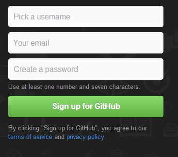
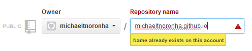

Lesson 1
What is Git?
(More importantly, why should you care?)
Lesson 2
A basic lesson in the shell
(Basic navigation and git use)
Lesson 4
Clone the repo
(Create a local copy to change and maintain)
Lesson 5
Adding files to your repo
(Add files to your local repository)
Lesson 6
Push your changes
(Push changes online to the repository)
Got a bit of time on your hands and want to learn about the intuitive version control system used and trusted by novices and experienced developers alike?
Why should you
continue onwards in this site?
- Using branches, you can try new things without the fear of messing with your actual project
- You will have a new place to store your code, eliminate the worry of a crashed HDD
- You'll be able to track changes to your code
- Etc...
How long will it take
to complete the lessons on this site?
The amount of time required to comlete this site can vary greatly, as different users come in with different amounts of prior knowledge. In general, it is important to progress through the lessons at a slow pace so as to make sure you fully understand the information presented. Put simply, take your time.
What will I get out
of completing this site?
- A thorough understanding of the basic functions of git
- The ability to create repositories and maintain them locally
- A connection with a large community of coders and creative individuals who seek to improve their own code as well as others
- Etc...
1
What is Git?
(More importantly, why should you care?)
An intuitive version control system
Beyond just assurance that your code is backed up at some location other than your own hard drive, using git means that it is possible to revert a repository to its state at any given commit. So long as you use git frequently, there is literally no single point of failure that could possibly occur.
Additionally, using git allows you to seamlessly manage and distinguish between different groups of code- what will be part of the final product, testing, and anything else that could be necessary.
A lightweight yet powerful tool that allows you to collaborate with others effectively
When working on group projects, it is natural for work to be divided up. Traditionally, certain snippets of code would be distributed to team members, however few individuals would actually hold the entire code. Using git, this problem no longer exists- each person from the team stores the entire repository on their computer, and branches can be created to effectively manage the contributions of different team members. No longer is there a need to worry about a server crash or other loss of data.
Access to a tremendous open source community
Unlike many other systems out there, git truly has no limit. As a free user, one is able to host an unlimited amount of pages on the web, as well as a limitless amount of public repositories.
The benefits of using git lie not only in the ability to host sites for free or store code online, but in the community of individuals who volunteer countless hours improving code for others. Via pull requests, organizations, and more, git (and github) allow you to enter into a collaborative and self-sustaining community.
2
A basic lesson in the shell
(Basic navigation and git)
What is "the shell", and why does it matter?
Right now, as you have visited this website, you are interacting with your computer. Command line interface has largely been replaced by GUIs, however the command line remains a powerful tool that can be used to manage git and more.
To get started, you are going to want to go ahead and download git. Once you have finished, go ahead and open up Git Bash.
What you will see should look very similar to what is shown below (figure 2.1)- a terminal window with a flashing cursor and some text.
Figure 2.1
YOUR_ACCOUNT_NAME@YOURCOMPUTERNAME ~/
$ _
Essential commands to navigate the shell:
pwd: Print working directory (in order to navigate to the directory of your git repository, you must be able to identify which repo you are currently in!)
ls: Lists the files in the directory (excluding hidden files)
cd: Change directory (to move to the directory of your git repository)
3
Creating a repository online
(Create on the Github website)
Getting started on Github
Go ahead and open up your web browser, and visit the Github Website. Create a new account, and then proceed to create a new repository. Be sure to name it according to the convention username.github.io, so that you will be able to host your site on the web.
1
2
3
4
Cloning the Repository
(Create on the Github website)
What does cloning mean?
When using Git, cloning refers to downloading the entire contents of a repository on to one's personal computer. Unlike other version control systems, Git allows you or anyone else who so desires to download the entire repository.
This, of course, has several notable benefits. As Git is built around the idea of open source code, anyone in the world is able to clone a repository and help the owner fix mistakes and produce better products.

YOUR_ACCOUNT_NAME@YOURCOMPUTERNAME ~/
$ git clone https://github.com/michaeltnoronha/git_tutorial.git_
How to clone an online repository to your personal computer
As you likely have noted on the right, the example I have provided demonstrates the steps necessary in order to clone the repository in which this website is stored. See below.
In order to sucessfully clone a repository, follow these steps:
1) Visit github.com and navigate to the repository you wish to clone
2) Locate the button as shown in the image to the right
3) Make sure you are in the directory where you wish to store your local copy
4) Preceded by [git clone], enter the url into the command line and hit enter

5
Adding files to your repository
(Add files to your local repository)
Local repositories and git
Compared to other competing version control systems, git differs in a few minor ways. Among these differences is the way git handles locally stored snippets of code- there exists a clear dinstinction between local and remote code.
When you clone an online repository, you are creating a local copy of all files contained in the repository. The significance in this is realizing the distinction- and from that understanding how to properly manage a locally store repo. As a result of this structure, it is essential to keep your local copy up to date at all times so that it can be easily pushed back up to the online repository. The way to make sure of this is to execute the command git pull from the command line.
6
Pushing your changes
(Push your changes online to the repository)
Commands to know
If you wish to pick on this easily, it is absolutely essential to keep in mind what is actually going on rather than mindelessly typing in commands. That said, let us continue onward with a brief explanation of the commands one must know in order to push from the command line.
git status: Git status is a quick and easy way to understand what state your local repository is in as compared to the online repository
git add: Git add includes a file in the staging area, so that it can be commited
git commit: Git commit takes a "snapshot" of the repository in the condition that it is in
git push: Git push transfers all commits and changes to the online repository